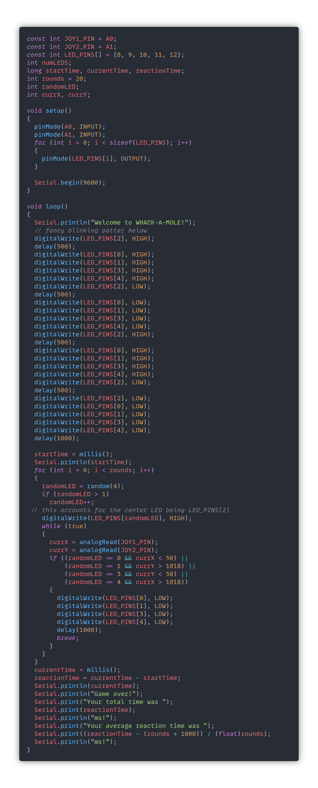

Lab 4: Whack-A-MoLED
Henry Waill - 3/1/2023
Description
This lab served as an introduction to more advanced Input/Output circuits with our Arduino. Instead of using binary, or digital, inputs and outputs, we upgraded to using analog inputs. Instead of just a low or high signal, the analog pins on our Arduinos can detect the incoming voltage with more resolution.
Materials
All of the materials required to complete this lab, with the exception of the multimeter, were supplied in the ELEGOO Arduino Uno Starter Kit.
- Arduino (Elegoo) Uno R3 Controller Board
- USB Cable
- Breadboard Jumper Wires
- Resistors
- LEDs
- Multimeter
- Potentiometer (10k)
- Joystick Module
Part 1: Using a Potentiometer
To begin this lab, we started with the basics of dynamically controlling voltage. As we know, the voltage in a circuit can easily be manipulated with the use of resistors. Adding a resistor in series with a 5V power supply will lower the voltage by a certain amount. Because we want to be able to detect changing voltage in this lab, we will use the most basic of variable resistors, the potentiometer. An image of a potentiometer connected to the Arduino is below, as well as a circuit diagram.

In this circuit, the potentiometer's middle pin is hooked up to our Analog 0 (A0) pin on the arduino, and we can read the voltage using the analogRead() function. The function returns a value between 0 and 1023 (inclusive,) which corresponds to 0-5V. The code will look something like this:
And here's a video of the circuit in action:
Part 2: Light 'em Up With a Potentiometer
The next section let's us visualize the reading from the potentiometer with a line of LEDs. We want to turn on a number of the LEDs that corresponds with the voltage reading on our A0 pin. I forgot to take a still image of the circuit connected, but the video below of the working circuit shows the configuration. As I mentioned above, the analogRead() function returns a value in the range of 0 to 1023, but we want to light up a varying number of 5 LEDs. We want to use the map() function to map values in the range of 0-1023 to values in the range of 0-5.
I wrote a program that does this on a loop, so the number of LEDs lit is constantly responding to changes in the potentiometer's state. Here's the code I used to do that:
And here's a video of the circuit working:
Part 3: Joystick for Arduino
The joystick module included with our kit is made up, fundamentally, of two potentiometers that track the movement of the stick in the x and y axes. This joystick also has a button that allows for the user to press into the stick; however, I decided not to wire it up because it was not going to be used in this lab. We will use another pin, A1, to connect the second axis of the joystick. Here's an image of the module wired up:

We then adapted the sketch that printed the values of our single potentiometer in order to accomodate for the second axis of the joystick. Here's the new code:
And here's a video of the sketch in action:
I found that the joystick was returning values around 500-525 in both axes when it was in the neutral position. When the stick was left, the X value was close to 0, right: X near 1023, top: Y near 0, bottom: Y near 1023. The joystick seemed to have a buffer so that the diagonals kept the X and Y values near 0 and 1023 as well.
Part 4: Light 'em Up With a Joystick
We want a more visual display of the sketch responding to the joystick inputs, so we arranged the five LEDs in a cross pattern, as shown in the following image:

Here's the new code that has the LEDs light up with the joystick's position:
And here's a video of the circuit working. My joystick seemed to have some inconsistencies, so sometimes there was no overlap in lit LEDs in the diagonal orientations.
Part 5: Basic LED Whack-A-Mole
The next section does not require us to change the circuit, just the behavior of the LEDs.This game combines some techniques that we have used in the past, with timing and such. I also took the liberty of making a fancier blinking sequence to start the game. It's a lot, but here's the code I used (gist at the bottom):
And here's a video of the game: